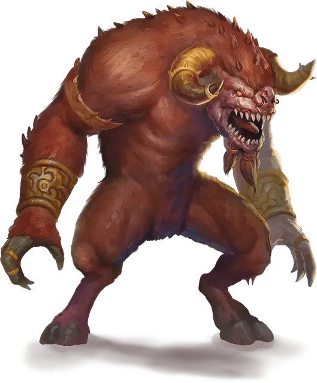

Гористро
Goristro
Огромное Исчадие (Демон), хаотично-злое

Класс Доспеха 19 (природный доспех)
Хиты 310 (23к12 + 161)
Скорость 40 футов
| мод | спас | ||
|---|---|---|---|
| СИЛ | 25 | +7 | +13 |
| ЛОВ | 11 | +0 | +6 |
| ТЕЛ | 25 | +7 | +13 |
| мод | спас | ||
|---|---|---|---|
| ИНТ | 6 | −2 | −2 |
| МДР | 13 | +1 | +7 |
| ХАР | 14 | +2 | +2 |
Навыки Восприятие +7
Сопротивление урону огонь, холод, электричество; дробящий, колющий, рубящий от немагических атак
Иммунитет к урону яд
Иммунитет к состояниям отравление
Чувства тёмное зрение 120 футов, пассивное Восприятие 17
Языки Бездны
Опасность 17 (18000 опыта)
Бонус мастерства +6
Особенности
Атака в броске. Если гористро переместится как минимум на 15 футов по прямой к цели, а затем в том же ходу попадёт по ней атакой бодания, цель получает дополнительный колющий урон 38 (7к10). Если цель — существо, она должна преуспеть в спасброске Силы Сл 21, иначе её оттолкнёт на 20 футов и собьёт с ног.
Запоминание пути. Гористро может с лёгкостью вспомнить любой пройдённый путь.
Сопротивление магии. Гористро совершает с преимуществом спасброски от заклинаний и прочих магических эффектов.
Осадное чудовище. Гористро причиняет двойной урон предметам и строениям.
Действия
Мультиатака. Гористро совершает три атаки: две кулаками и одну копытом.
Кулак. Рукопашная атака оружием: +13 к попаданию, досягаемость 10 футов, одна цель. Попадание: Дробящий урон 20 (3к8 + 7).
Копыто. Рукопашная атака оружием: +13 к попаданию, досягаемость 5 футов, одна цель. Попадание: Дробящий урон 23 (3к10 + 7). Если цель — существо, она должна преуспеть в спасброске Силы Сл 21, иначе её собьёт с ног.
Бодание. Рукопашная атака оружием: +13 к попаданию, досягаемость 10 футов, одна цель. Попадание: Колющий урон 45 (7к10 + 7).
Описание
Гористро выглядит как изуверский минотавр двадцати футов ростом. Под началом демонических повелителей гористро становятся грозными осадными орудиями и ценными питомцами. Преследуя добычу, они сверхъестественным образом выбираются из лабиринтов и запутанных проходов.
Громадные гористро иногда носят на плечах паланкины для меньших размерами демонов, перевозя их, как слоны на своих спинах.
См. дополнительно статью: "Бестиарий: Демоны"